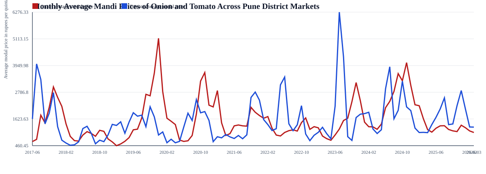
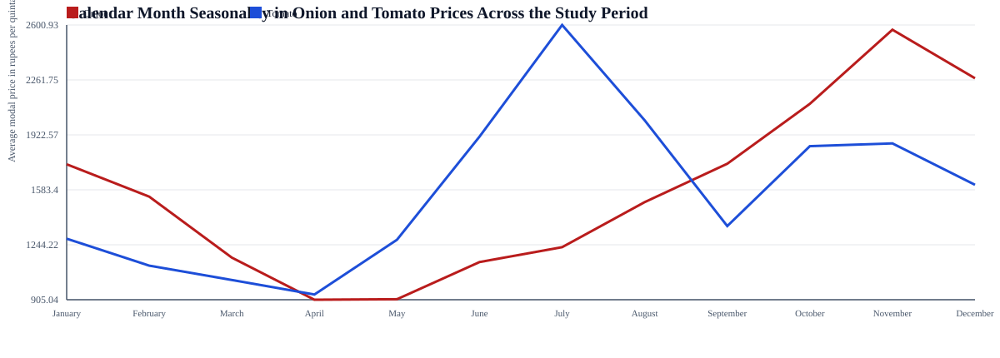
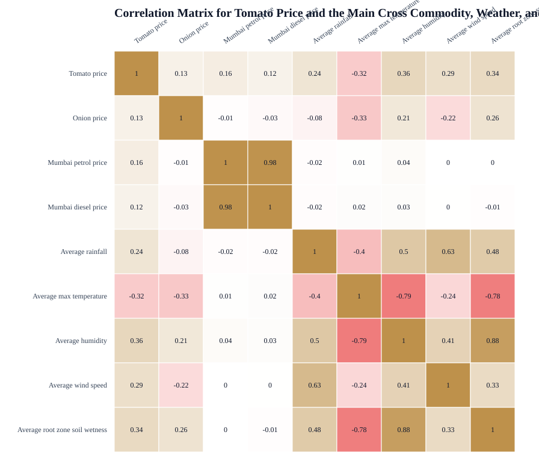
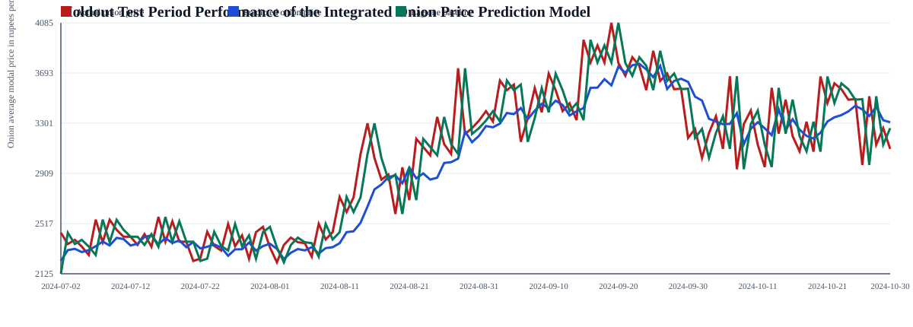
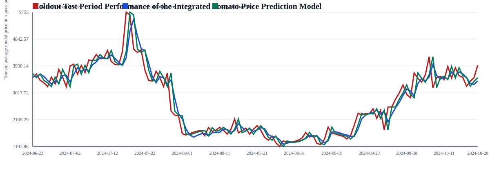
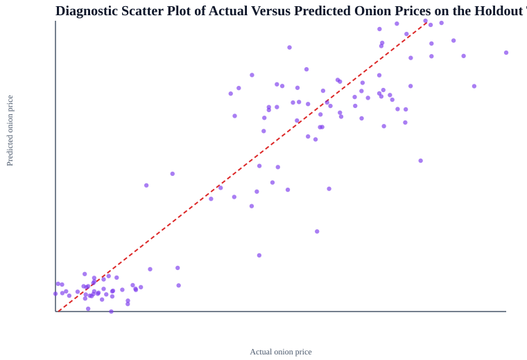
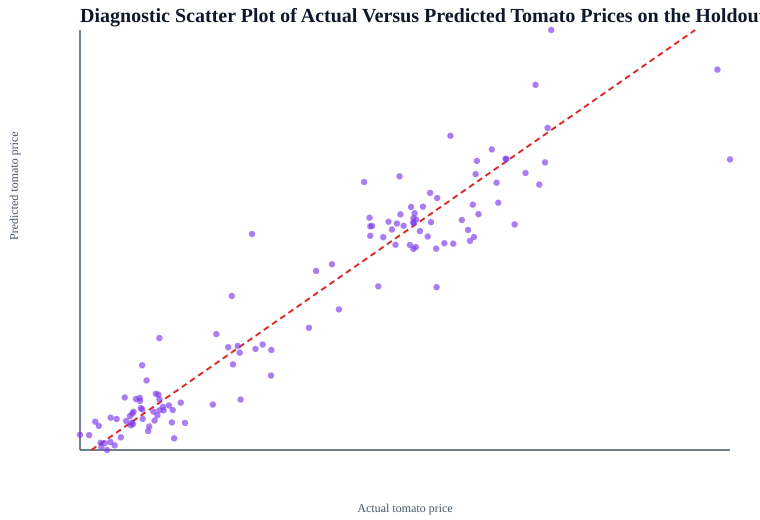
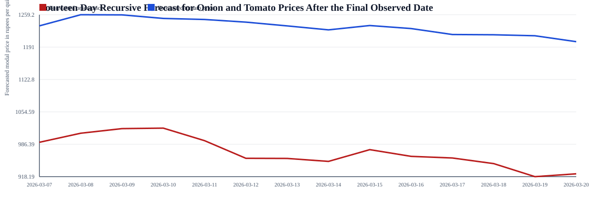

Integrated Onion and Tomato Mandi Price Intelligence Report
This report combines Pune district onion and tomato mandi prices with nearby district weather information and Mumbai petrol and diesel prices. It covers descriptive analysis, exploratory analysis, correlation review, diagnostic analysis, predictive modeling, future forecasting, and prescriptive action guidance.
Executive Summary
Integrated common dates3085
Onion model R20.9371
Onion model RMSE247.88
Tomato model R20.894
Tomato model RMSE287.84
Onion CV lambda0.1
Tomato CV lambda0.1
- Onion uses longer lag windows because it is less perishable and retains temporal memory for longer periods.
- Tomato uses shorter lag windows because the price reacts more quickly to fresh arrivals and spoilage pressure.
- Ridge regression plus time-series cross-validation was used to control collinearity risk and test model robustness.
Exploratory Data Analysis



Model Diagnostics and Forecasting





Prescriptive Analysis
- Onion is forecasted to soften over the next two weeks, so traders should consider faster release, especially if holding costs and shrinkage risk increase.
- Tomato is forecasted to weaken or remain fragile, so the prescriptive action is to prioritize immediate harvesting, sorting, and dispatch to reduce spoilage losses.
- Current low rainfall conditions suggest transport friction is not the main constraint, so price planning can focus more on demand and arrivals.
- Higher Mumbai fuel prices imply transport cost pressure, so grouping shipments and optimizing route density can help protect margins.